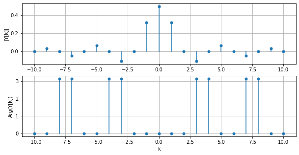

Série de Fourier d’un créneau¶
On considère le signal créneau \(y(t)\) de période \(2T\) défini par :
\[\begin{split}
y(t) =
\begin{cases}
A \quad &\text{si}\ -\frac{T}{2} \leq t \leq \frac{T}{2}, \\
0 \quad &\text{sinon}
\end{cases}
\end{split}\]
avec \(A=1\) et \(T = 1\).
Sa série de Fourier est égale à :
\[
Y[k] = \frac{A}{2} \mathrm{sinc}\left(\frac{k}{2}\right).
\]
Comme elle est à valeurs complexes, sa représentation est séparée en module et argument :

À partir de la série de Fourier, on peut revenir au signal temporel avec la série de Fourier inverse.